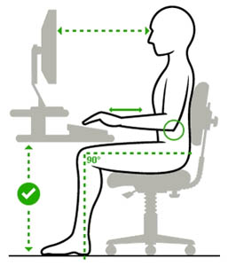

Правила работы за компьютером
Сегодня компьютер стал частью нашей жизни. И, несмотря на то, что современные технологии постоянно совершенствуются, мы все же рискуем «нажить» проблемы со здоровьем. Способствуют этому и привычка сидеть за компьютером как попало и сколько попало. Вот и получается, что наш помощник и друг превращается в нашего врага. Поэтому знакомимся и запоминаем: правила работы за компьютером.
Правила работы за компьютером
- Выбирайте правильную позу. А именно: прямо напротив экрана, верхняя часть монитора на уровне глаз или чуть ниже.
- Соблюдайте расстояние от глаз до монитора – 55-60 см (расстояние вытянутой руки). Нижняя часть монитора должна быть наклонена под небольшим углом к работающему (то есть, расположена чуть ближе).
- Выбирайте для работы за компьютером удобное кресло. Желательно, чтобы это было эргономическое (ортопедическое) кресло с подлокотником и подголовником.
- Высота сиденья кресла (стула) должна быть такой, чтобы руки, положенные на клавиатуру, были расположены горизонтально.
- Каждый час делайте перерывы на 15-20 минут. Перерыв, в котором Вы просто блуждаете по Интернету или играете за компьютером, не считается.
- Следите за дыханием: оно должно быть ровным, без задержек.
- Выполняйте как можно чаще упражнения для глаз.
Все эти правила являются основными – они должны быть известны каждому, кто работает за компьютером.
Много другой интересной и полезной информации о правильной работе за компьютером могут дать врачи. Вот, например, что по этому поводу говорит Елена Малышева, известная телеведущая и медик.
"Первое. У вас должен быть правильный стул. Стул должен поддерживать поясничный лордоз – изгиб вперед на пояснице. Стул, на котором я сижу, неправильный. Эти кресла – худшие из всех, потому что они заставляют нас вот это место, которое должно быть выгнуто вперед (поясничный лордоз), – заставляют нас разваливаться и выгибать это место в обратную сторону. Это противоестественный изгиб, он называется кифоз (то есть горбик). Стул должен с изменением высоты иметь специальную выгнутую спинку, которая будет упираться в ваш поясничный лордоз и заставлять вас сидеть в правильном положении. Это раз. Второе. Сидения должны быть такими, чтобы вы могли полностью сесть. И правило прямых углов. Вы должны сидеть за столом так, чтобы у вас колено и бедро были под прямым углом. То есть такая должна быть высота стула. И руки на столе у вас должны быть так, чтобы тоже был прямой угол. Везде прямые углы: между бедром и спиной, между локтем и предплечьем. И стул должен иметь ножки, регулируемые по высоте. И стол тоже. Тогда вы все подберете для себя правильно. Компьютер должен находиться на высоте глаз. Вы должны сидеть и смотреть прямо."
Упражнения для глаз
Следующие упражнения помогут Вам снять зрительное напряжение при работе за компьютером. Упражнения рекомендуется выполнять ежедневно. Во время выполнения следует отвернуться от монитора или вовсе выйти из помещения, где находится компьютер.
- Стоя лицом к окну, найдите глазами максимально отдаленный объект в пределах видимости. На глубоком вдохе переведите взгляд на кончик носа. На выдохе опять найдите взглядом самый далекий объект в окне, потом вдохните и посмотрите вверх. Опять выдох – и взгляд в окно. Повторите упражнение 2-3 раза.
- Закройте веки и расслабьте глаза. В таком положении делайте вращательные движения глазами сначала по часовой стрелке, потом против неё. Сделайте по 5 вращений вправо и влево.
- Открытыми глазами медленно «нарисуйте» в воздухе восьмерку: по диагонали, по горизонтали, по вертикали. 5-7 восьмерок в каждом направлении будет достаточно, чтобы Ваши глазки отдохнули.
Как защитить глаза от компьютера
И еще один маленький секрет для тех, кто заботится о своем здоровье.
Врачи утверждают, что мед помогает защитить глаза от компьютера. По их словам, в состав меда входит комплекс полезных веществ, необходимых для нормальной функции сетчатки. Если после работы за компьютером глаза сильно устают, выглядят потухшими, появляется сеточка кровеносных сосудов, то это означает, что им необходима незамедлительная помощь.
Рецепт: после пробуждения, за десять-пятнадцать минут до чистки зубов, медленно рассосать столовую ложку меда. Желательно повторить эту процедуру и перед сном.
Крепкого Вам здоровья и удачной работы!